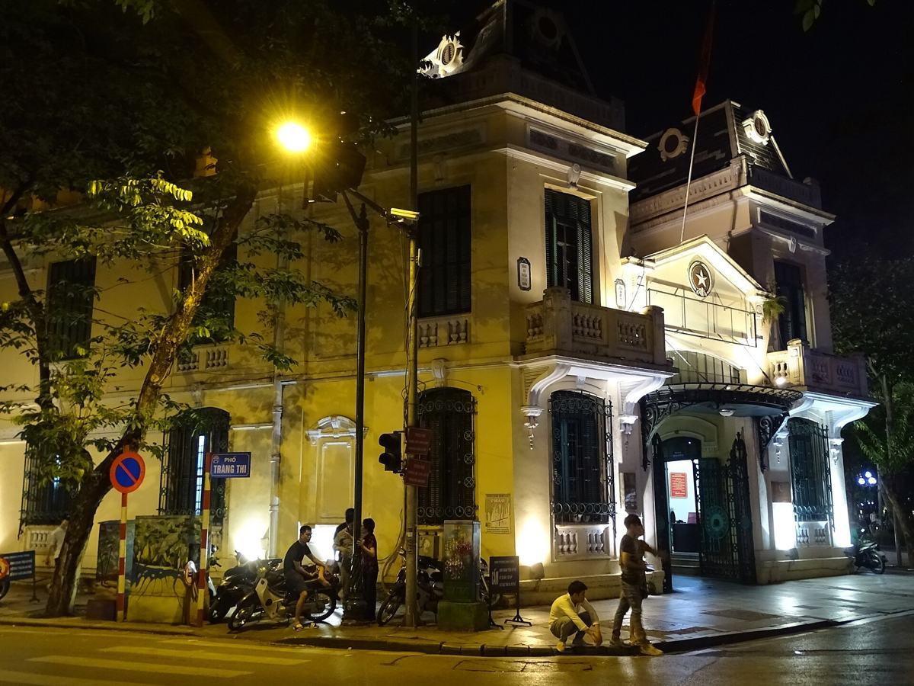
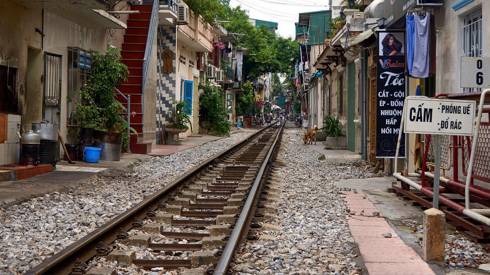
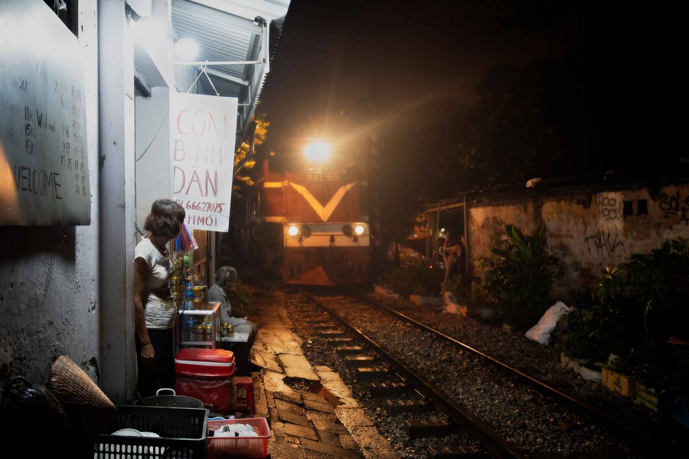
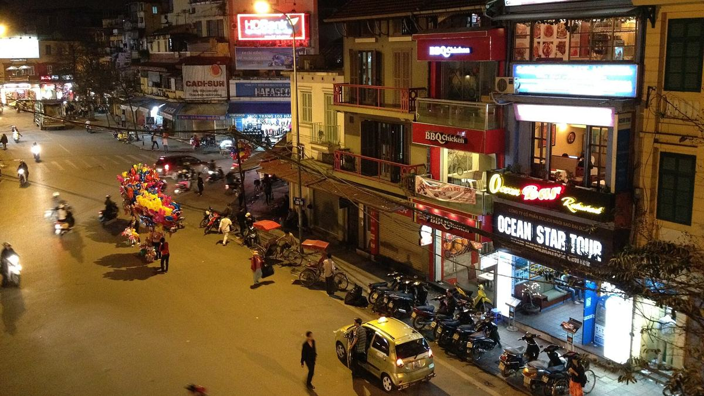

Igor Belyaev
Étudiant en informatique · Cloud & DevOps
L3 Informatique
Lille × Hanoï
1 440 px
5 serveurs
À propos
Je m'intéresse à ce qui se passe une fois le code écrit : le déployer, le surveiller, le faire tenir quand le trafic augmente.
Je suis en troisième année de licence d'informatique, dans le cadre d'un double diplôme entre l'Université de Lille et l'USTH, à Hanoï.
C'est en cours de réseaux que j'ai compris que l'infrastructure m'attirait plus que l'application elle-même. Ce site me sert de terrain d'entraînement, et je vise un master orienté cloud et DevOps.
- Actuellement
- Licence 3 Informatique, USTH, Hanoï
- Objectif
- Master cloud & DevOps, rentrée 2027
- En dehors
- La photo, quelques images plus bas
Parcours
- 2020 — 2023 Berck Baccalauréat général Lycée Jan Lavezzari
- 2023 — 2024 Amiens Classe préparatoire MP2I Lycée Louis Thuillier
- 2024 — 2026 Lille Licence 1 Informatique – Mathématiques, puis Licence 2 Informatique Université de Lille
- 2026 — 2027 Hanoï Licence 3 Informatique, double diplôme Université de Lille × USTH
- 2027 — Master La suite : un master orienté cloud et DevOps Candidatures en préparation
Compétences
Je pratique
- Java
- SQL
- Linux
- Git
J'apprends
- Docker
- nginx
- GitHub Actions
Langues
- Russe langue maternelle
- Français C1
- Anglais B2
Projet
Ce site
À chaque git push, il se reconstruit, se teste et se publie tout seul.
Une page écrite à la main, sans framework, servie par nginx dans un conteneur Docker. GitHub Actions construit l'image pour amd64 et arm64, la démarre, vérifie que les pages, les en-têtes et la page 404 répondent, puis la publie sur ghcr.io.
nginx tourne sans les droits root, dans un conteneur en lecture seule, et chaque image porte le hash de son commit : on peut revenir à n'importe quelle version.
- push
- build
- test
- publish
- deploy bientôt
Version affichée : copie locale
Photos
Hors de l'écran, je fais de la photo. Les images ci-dessous sont provisoires : les miennes arrivent.




Contact
Une question sur mon parcours, un stage, un projet ? Écrivez-moi.